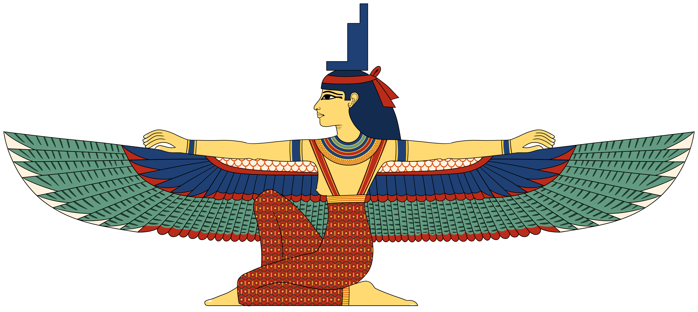

Eset je starověká egyptská bohyně známá svou moudrostí a magickými schopnostmi. Je také nazývána Isis. Eset byla starostlivou matkou, milující manželkou a mocnou ochránkyní. Byla manželkou Usira, boha podsvětí, a spolu měli syna Hora. Eset je často zobrazována s korunou ve tvaru trůnu na hlavě. Proslavila se svou chytrostí a magickými schopnostmi. Byla dcerou bohyně Nut a boha Geba.
Eset byla nejvíce uctívanou bohyní starých Egypťanů, což dokazují četné spisy a hieroglyfické texty vztahující se k ní. Zmínky o ní nacházíme v Textech pyramid, Textech rakví a Knize mrtvých. Její kult se udržel přes 4 a půl tisíciletí a těšila se úctě mnoha národů starověku. Její oblíbenost byla způsobena jejími kladnými rysy: manželskou láskou, věrností, krásou a mateřskou péčí. Byla také obdařena kouzelnou mocí ke konání dobra a spravedlnosti.